2:07:57 · 42 OPERE
Seminari tematici (IIl): tramonto della verità.
Il filo del discorso
Il terzo seminario tematico prende avvio da una critica a Derek Parfit e cerca una nozione di verità che possa orientare l’esistenza, oltre alla correttezza di singole affermazioni. Il relatore paragona il venir meno di questo orientamento allo spegnersi della luce in una stanza familiare: la realtà resta vicina, ma non si sa più come attraversarla.
Leggi la sintesi completaRiduci la sintesi
Il confronto fra Pilato e Gesù, il Tao tê ching e la porta di Kafka sostiene la sua interpretazione della verità come cammino, intrecciata all’etica; le ricostruzioni teologiche e le etimologie sono discusse come sue letture. Il centro argomentativo passa per esempi concreti di responsabilità culturale. Il demone della tautologia di Clément Rosset offre lo spunto per confrontare una citazione abbreviata con la lettera di Wittgenstein a Russell. La Dianoia astronomica di Francesco Sizi e il Sidereus nuncius mostrano invece come una confutazione storicamente significativa possa risultare scientificamente errata. La dianoia nella Repubblica di Platone permette al relatore di distinguere la storia delle idee dalla selezione dei risultati scientifici e di interrogare il legame fra premesse, esperienza e prova. I partecipanti spostano poi il problema su educazione e vita pubblica. Un confronto fra il romanzo di Wells e le memorie di Höss introduce il tema della tenerezza; L’arte di tacere di Dinouart alimenta la discussione su competenza, diritto di parola e dissenso. Heschel, Illich, Alice Miller e Fromm accompagnano una diagnosi pessimistica della formazione e dell’autonomia individuale. Le categorie psicologiche e le analogie storiche non diventano diagnosi cliniche di persone o collettività. La conversazione conclude sul rapporto fra verità, mezzi di comunicazione e partecipazione civica. Le accuse ai media, i giudizi sulla pandemia e le posizioni sui conflitti restano attribuiti agli interlocutori e richiedono distinzioni documentali: la crescita demografica non decide da sola la qualificazione di genocidio, una grazia presidenziale non è un’assoluzione e una successione temporale non dimostra un accordo occulto. Nonostante il pessimismo, il relatore invita a continuare il confronto come dovere morale.
I libri nel discorso

Derek Parfit – Full Address (Oxford Union)
Identificazione probabile
Note sul riferimento
Copertina: Miniatura originale del video ufficiale Oxford Union, pubblicazione online 10 ottobre 2015
Immagine autentica fornita dal canale: Parfit davanti al leggio nell’aula della Oxford Union. Miniatura documentaria del video, non copertina di libro o prova delle valutazioni polemiche. Non ricostruisce graficamente il suo aspetto e non stabilisce il giorno dell’incontro.
Video di Derek Parfit già discusso nel seminario precedente: il riferimento sembra lo stesso intervento Oxford Union catalogato, ma titolo e sede non sono ripetuti qui.

Parfit: A Philosopher and His Mission to Save Morality
Identificazione probabile
Note sul riferimento
Copertina di un’edizione della stessa opera: Princeton University Press, 2023, ISBN 9780691225234. Copertina della stessa biografia; nessuna tiratura specifica del video certificata.
David Edmonds e biografia di Parfit sono espliciti a 841–867 s; la valutazione promozionale della quarta di copertina è oggetto della polemica, non un giudizio fatto proprio dalla scheda.
Biografia recente di Parfit nominata senza autore o titolo; corrispondenza probabile alla biografia di David Edmonds già identificata nel seminario precedente, senza dedurre una nuova opera.
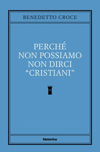
Perché non possiamo non dirci «cristiani»
Identificazione probabile
Note sul riferimento
Copertina: Historica, 2022, a cura di Corrado Ocone; ristampa successiva al saggio originale.
Immagine autentica dell’opera, controllata visivamente; l’edizione di riferimento non è attribuita al filmato.
Formula Perché non possiamo non dirci cristiani citata e autore evocato come pensatore napoletano; identificazione testuale specifica, senza nome esplicito.

Vangelo secondo Giovanni
Note sul riferimento
Copertina del volume completo: San Paolo, 2014 · Nuova Versione dai Testi Antichi · edizione di riferimento
Vangelo secondo Giovanni è un libro della Bibbia. L’immagine mostra il volume completo San Paolo di riferimento, non un’edizione autonoma del singolo libro e non una versione identificata nella citazione.
Pilato e la domanda sulla verità (Gv 18:38); poi via, verità e vita (Gv 14:6). L’ipotesi di interpolazione attribuita a Gerolamo è del relatore, contraddetta dalla citazione in Ireneo IV 7,3 anteriore a Gerolamo; nessuna certezza sulle parole storicamente pronunciate da Gesù è dedotta.
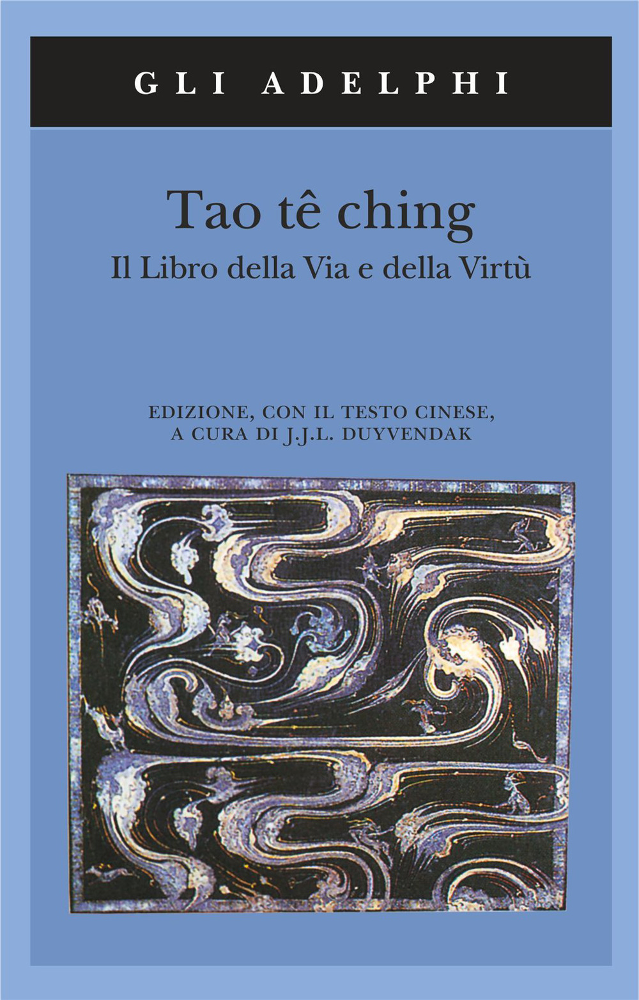
Tao tê ching
Note sul riferimento
Copertina: Adelphi · Tao tê ching · edizione di riferimento
Immagine associata all’ISBN di riferimento e controllata visivamente; edizione e traduzione non identificate come quelle citate o lette nel video.
Titolo esplicito, tradotto Il libro della via e della virtù, usato per discutere la metafora della verità come cammino; non equivalenza dimostrata fra tradizioni diverse.
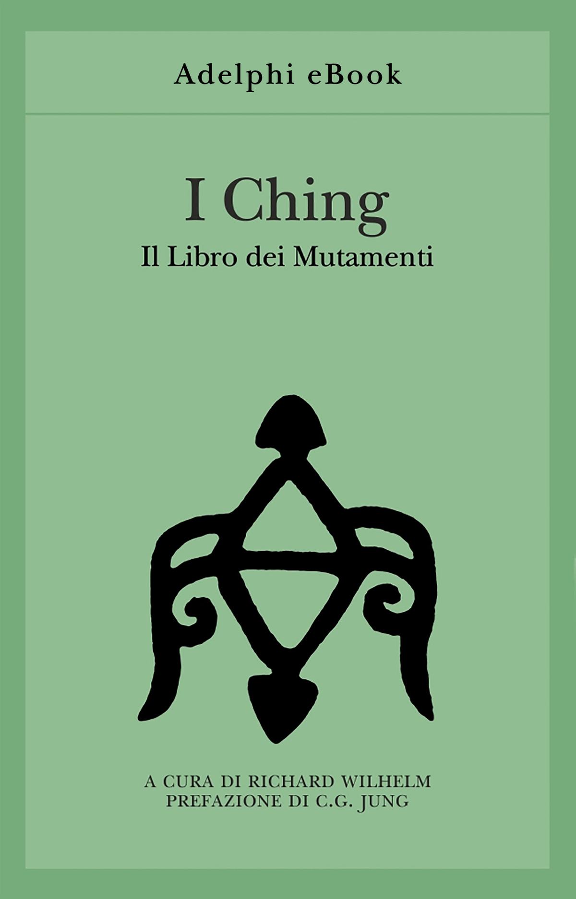
I Ching. Il Libro dei Mutamenti
Note sul riferimento
Copertina dell’edizione indicata: Adelphi eBook, 2020, ISBN 9788845980930
Titolo pronunciato e contrapposto al Tao tê ching. Immagine autentica dell’eBook Adelphi 2020: non copertina della tiratura cartacea 1991 né esemplare certificato nel video. Opera composita della tradizione cinese; Richard Wilhelm è curatore e traduttore, non autore antico.
I Ching nominato nel confronto con Tao tê ching e con usi divinatori moderni. La critica a questi usi è del relatore; nessuna particolare edizione identificata.
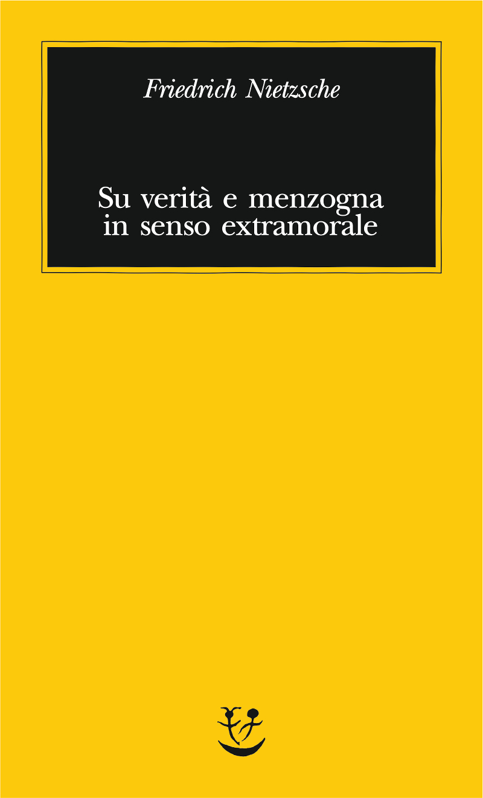
Su verità e menzogna in senso extramorale
Identificazione probabile
Note sul riferimento
Copertina: Adelphi · Biblioteca minima 66, 2015 · traduzione di Giorgio Colli
Immagine autentica dell’opera, controllata visivamente; l’edizione di riferimento non è attribuita al filmato.
Nietzsche e la verità in senso extramorale: titolo abbreviato ma riconoscibile nel confronto sul rapporto fra verità ed etica; identificazione probabile.
Davanti alla legge
Note sul riferimento
Copertina: Vitalis, Edizione di Praga, 2024
L'indice del campione Vitalis colloca Davanti alla legge a pagina 42. Edizione italiana illustrativa, traduzione di Giuseppina Gatta, postfazione di Harald Salfellner tradotta da Manuela Boccignone; non identificata nel video.
Kafka e il racconto della porta riservata al protagonista espliciti. La parafrasi è interpretativa e non una citazione integrale del racconto.
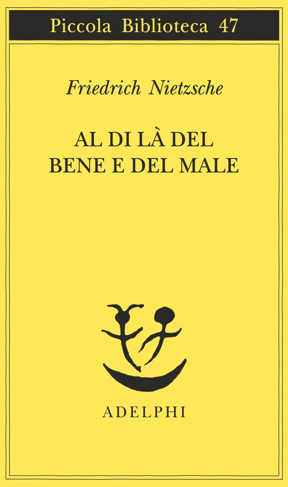
Al di là del bene e del male
Identificazione probabile
Note sul riferimento
Copertina: Adelphi, Piccola Biblioteca Adelphi 47, 1977, traduzione di Ferruccio Masini, XV–221 pagine, ISBN 9788845901980. Copertina autentica della edizione cartacea italiana, gialla con titolo e autore; non attribuita alla copia del relatore. L’eBook 2015 ha un ISBN distinto.
Immagine autentica dell’opera, controllata visivamente; l’edizione di riferimento non è attribuita al filmato.
Allusione specifica all’abisso che guarda, aforisma146; titolo non pronunciato, identificazione testuale probabile.

Discorso sul metodo
Identificazione probabile
Note sul riferimento
Copertina: Laterza · Economica 127 · opera in collana dal 1998, ristampa 2025 · traduzione di Maria Garin
Immagine autentica dell’opera, controllata visivamente; l’edizione di riferimento non è attribuita al filmato.
Descartes e il dominio dell’uomo sulla natura: allusione probabile alla parte VI del Discorso sul metodo; la formula latina del parlato non è presentata come trascrizione letterale del francese.

Genesi
Note sul riferimento
Copertina: Einaudi, I libri della Bibbia / Einaudi Tascabili, 2000; introduzione di Steven Rose
Copertina dell’edizione autonoma Genesi, nella serie I libri della Bibbia, con introduzione di Steven Rose. Edizione scelta come riferimento iconografico; nessuna edizione è confermata nel video.
Genesi nominata per il dominio sulle creature e l’imposizione dei nomi; si distinguono Gen1:26–28 e Gen2:19–20, senza dedurre una precisa traduzione biblica.

Cratilo
Note sul riferimento
Copertina: Carocci · 2022
Copertina autentica controllata visivamente. Edizione di riferimento; non identifica l’esemplare usato o citato nel video.
Titolo deformato ma riconoscibile del Cratilo, nuovamente richiamato a 2847 s, sulla sapienza della lingua. L’argomento etimologico non dimostra da solo una tesi fisica.

Dichiarazione d’indipendenza degli Stati Uniti d’America
Note sul riferimento
Facsimile: incisione di Stone del 1823: Documento del 4 luglio 1776 · incisione di William J. Stone del 1823
Riproduzione documentaria dell’incisione di Stone del 1823 conservata dai National Archives. Non è la pergamena originale del 1776, né la copertina di un libro.
Dichiarazione d’indipendenza americana e formula delle verità di per sé evidenti esplicite, citate come esempio di nozione operativa della verità.
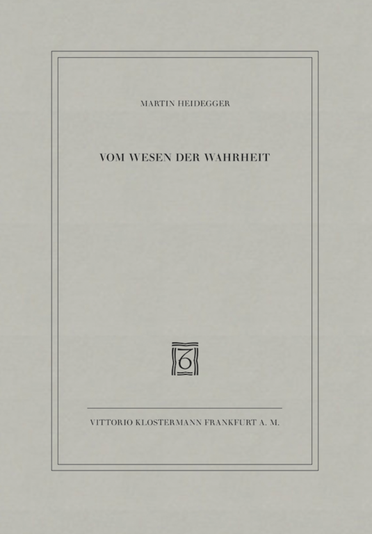
Sull’essenza della verità (Vom Wesen der Wahrheit)
Identificazione probabile
Note sul riferimento
Copertina dell’edizione indicata: Vittorio Klostermann, 8ª edizione ampliata 1997, ISBN 9783465029458
Titolo italiano e Heidegger espliciti. Riferimento probabilmente al saggio pubblicato nel 1943, non alle lezioni 1931–1932 sul mito della caverna e Teeteto, volume GA 34 con titolo tedesco simile: l’edizione mostrata nel video non è stata vista né identificata. Copertina ufficiale dell’Einzelausgabe del saggio, 1997.
Heidegger e Sull’essenza della verità sono nominati. Probabile riferimento al saggio 1943; il testo non consente di certificare l’edizione mostrata o di escludere un contenitore più ampio.
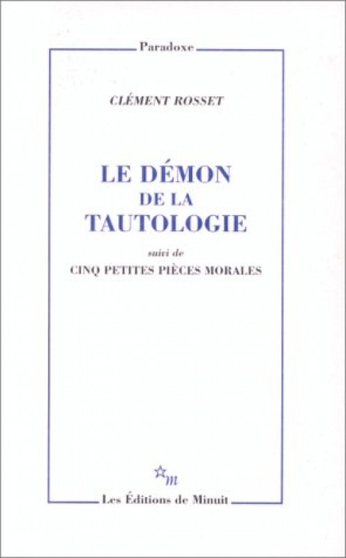
Le Démon de la tautologie, suivi de Cinq petites pièces morales
Note sul riferimento
Copertina dell’edizione indicata: Les Éditions de Minuit, Paradoxe, 1997, ISBN 9782707316158
Titolo tradotto dal relatore come Il demone della tautologia; l’autore è Clément Rosset. La parola Clément nel parlato non identifica Bruno Clément. L’editore elenca anche un post-scriptum su Wittgenstein. La critica alla citazione è del relatore: non si assume una frode accademica come fatto. Copertina ufficiale del volume che include le cinque pièces morali.
Titolo Il demone della tautologia esplicito e lungo confronto con una citazione di Wittgenstein. Primaria Minuit identifica Clément Rosset e volume 1997; valutazioni sull’autore e omissioni attribuite al relatore.
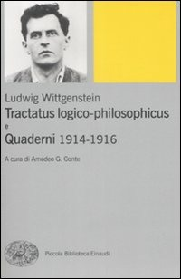
Quaderni 1914–1916
Note sul riferimento
Copertina del volume che contiene i Quaderni: Einaudi · Tractatus logico-philosophicus e Quaderni 1914–1916, 2009
Copertina autentica e ricontrollata visivamente: Einaudi 2009, a cura di Amedeo G. Conte. L’ISBN è del volume contenitore; Tractatus e Quaderni restano testi distinti.
È letto il passo della lettera a Russell, 29 ottobre 1913 sull’identità, con continuazione sulla sua importanza. Il passo appartiene all’appendice III epistolare dei Quaderni, non attribuzione a una nota del 1914–1916. Il parlato dice cartolina; il testo edito reca anche un poscritto 30 ottobre, che chiama il documento lettera.
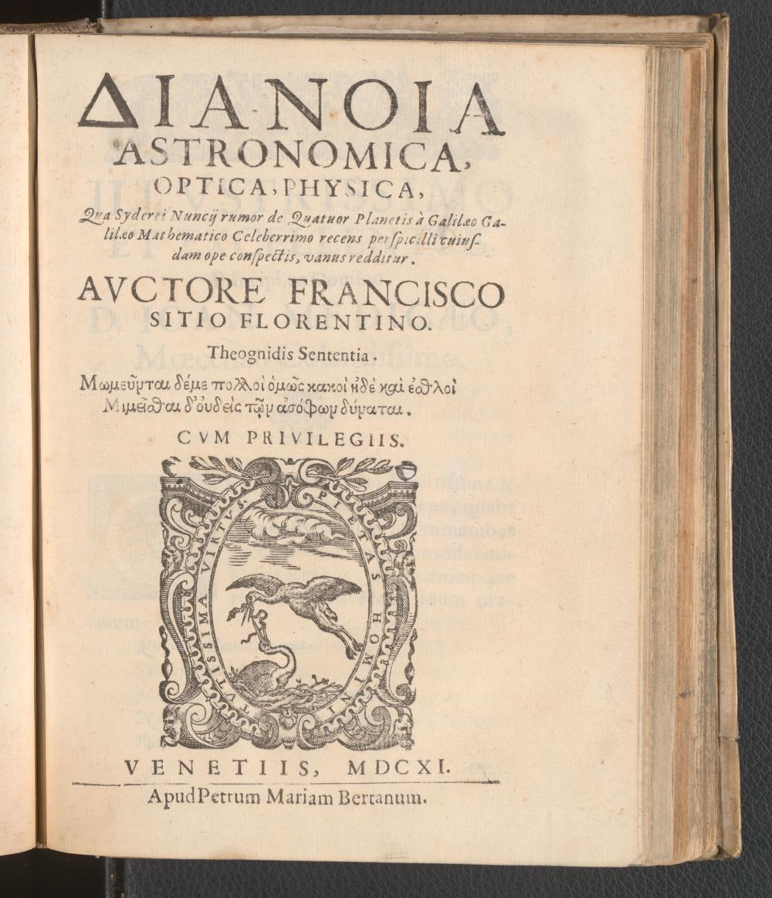
Dianoia astronomica, optica, physica
Note sul riferimento
Frontespizio dell’edizione originale: Frontespizio originale, Venezia, Pietro Maria Bertano, 1611 · ETH-Bibliothek Zürich, Rar 4342:4
Titolo, autore e anno espliciti. Frontespizio autentico digitalizzato da ETH/e-rara, Public Domain Mark, non copertina esterna. L’opera contesta il Sidereus nuncius: l’interesse storico non rende valida la sua confutazione delle osservazioni di Galileo.
Titolo, Francesco Sizi, Venezia 1611 e titolo latino esteso espliciti. L’opera è discussa come esempio di argomentazione storica smentita dall’osservazione, non come fonte astronomica valida.
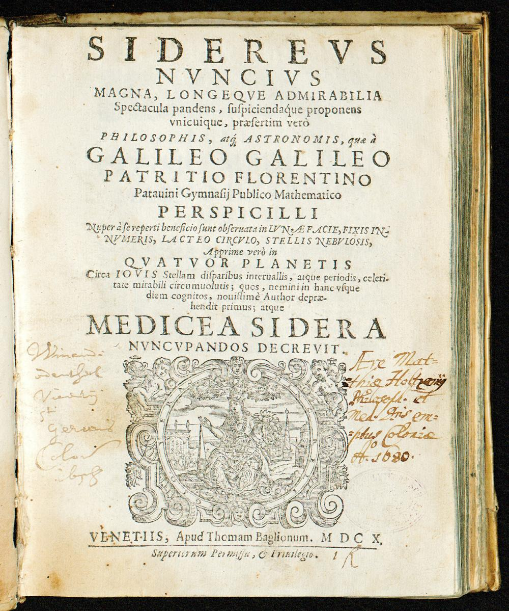
Sidereus nuncius
Note sul riferimento
Frontespizio dell’edizione originale: Frontespizio originale, Venezia, Tommaso Baglioni, 1610 · ETH-Bibliothek Zürich, Rar 4342:1
Titolo e autore espliciti nel confronto con Sizi. Frontespizio autentico della prima edizione digitalizzata da ETH/e-rara, Public Domain Mark: pagina [5] del manoscritto IIIF, non la legatura o le guardie precedenti, respinte. Nessuna edizione del video identificata.
Titolo e Galileo espliciti nel confronto con Sizi. Prima edizione 1610 riscontrata: i quattro astri medicei sono satelliti di Giove, benché il titolo storico li chiami pianeti.

La Repubblica
Note sul riferimento
Copertina: Laterza · La Repubblica · edizione con testo a fronte di riferimento
Immagine associata all’ISBN di riferimento e controllata visivamente; edizione e traduzione non identificate come quelle citate o lette nel video.
Libro VI della Repubblica nominato per la linea divisa e la dianoia; il giudizio sulla gerarchia del conoscere è la lettura del relatore, non una definizione contemporanea di tutte le scienze.

Gli elementi
Note sul riferimento
Copertina: Bompiani · Tutte le opere, raccolta contenente Gli elementi
La copertina illustra la raccolta Tutte le opere, che include Gli elementi; non è attribuita al video.
Gli Elementi di Euclide sono esplicitamente nominati come esempio della struttura della dimostrazione geometrica.
Giona
Note sul riferimento
Copertina della Bibbia che contiene Giona: San Paolo, 2014 · Nuova Versione dai Testi Antichi · raccolta completa
Copertina autentica della Bibbia completa San Paolo, non edizione autonoma di Giona né copia certificata nel video.
Libro di Giona esplicito e ripreso a4766s: la conversione di Ninive è letta come eccezione narrativa alla difficoltà di persuadere una collettività. Il racconto non prova che nessuna trasformazione razionale sia mai avvenuta nella storia.

Von der Wahrheit (Philosophische Logik, primo volume)
Identificazione probabile
Note sul riferimento
Copertina di Von der Wahrheit, edizione Piper: Piper, Serie Piper 1001, riedizione 1991, ISBN 9783492110013; opera originariamente pubblicata nel 1947
Copertina dell’edizione Piper associata all’ISBN verificato nel catalogo universitario. Non è un semplice ritratto usato in sostituzione del libro e non certifica la copia presente nel filmato.
Jaspers e un volume fondamentale sulla verità senza titolo: corrispondenza probabile a Von der Wahrheit già catalogato, distinta dall’altro saggio Wahrheit, Freiheit und Friede.
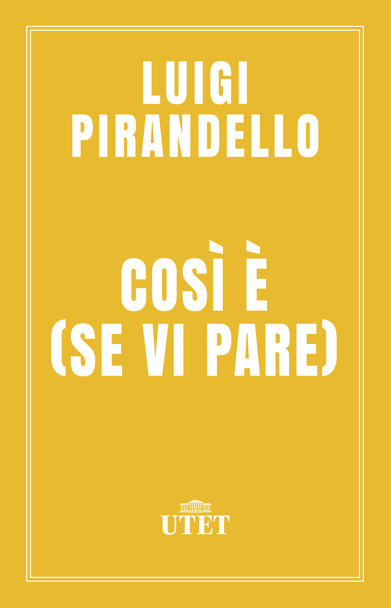
Così è (se vi pare)
Identificazione probabile
Note sul riferimento
Copertina: Edizione digitale UTET, con note critiche di Guido Nicastro, ISBN ebook 9788851142810. Dramma rappresentato per la prima volta nel 1917.
Copertina digitale autentica UTET gialla con autore e titolo bianchi. L’immagine si riferisce all’ebook; formato cartaceo, paginazione e anno di una ristampa non sono identificati.
Formula Così è, se vi pare riconoscibile nell’analogia polemica con il relativismo. Titolo teatrale evocato, senza analisi autonoma del dramma.
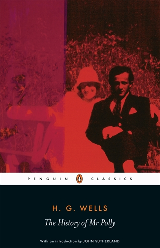
Storia di un uomo che digeriva male (The History of Mr Polly)
Note sul riferimento
Copertina dell’edizione indicata: Penguin Classics, 2005, ISBN 9780141441078 · edizione inglese
Wells e il titolo italiano abbreviato sono espliciti nell’intervento del partecipante. Stesso romanzo The History of Mr Polly, non un saggio di psicologia o la biografia di Höss con cui viene confrontato. Copertina inglese Penguin Classics 2005 dichiarata, non Einaudi o copia mostrata nel video.
Un partecipante nomina Wells e L’uomo che digeriva male, confrontando il romanzo con Höss attraverso il tema dell’educazione e della tenerezza. Non si deduce un nesso clinico necessario fra infanzia e crimini.

Comandante ad Auschwitz
Note sul riferimento
Copertina: Einaudi tascabili. Saggi, 8 aprile 2014, 268 pagine, ISBN 9788806221164. Traduzione di Giuseppina Panzieri Saija, prefazione di Primo Levi e articolo di Alberto Moravia. Non è certificato l’esemplare mostrato o posseduto dal relatore.
Copertina autentica Einaudi vista integralmente: ritratto in alto, autore Rudolf Höss, titolo Comandante ad Auschwitz, prefazione di Primo Levi e articolo di Alberto Moravia. Le descrizioni commerciali non sono utilizzate come fonte del numero delle vittime di Auschwitz.
Comandante ad Auschwitz esplicito nel confronto fra un romanzo e la memoria del comandante nazista; non si equiparano statuto documentario e personaggi delle due opere.

Passione di verità
Note sul riferimento
Copertina: Iduna · 2019 · prefazione Luca Siniscalco · traduzione Luisa Theodoli
Copertina autentica Iduna del 2019, con prefazione di Luca Siniscalco e watermark della libreria conservato. Non è la copertina dell’edizione Rusconi del 1977 né un’edizione identificata nel video.
Abraham Joshua Heschel e Passione di verità espliciti: il titolo dà nome all’atteggiamento di ricerca invocato dal relatore.

Chi è l’uomo?
Note sul riferimento
Copertina: SE, 2023
Chi è l’uomo? di Heschel è nominato esplicitamente accanto a Passione di verità.

Descolarizzare la società. Una società senza scuola è possibile?
Note sul riferimento
Copertina: Mimesis, collana Mimesis. Biblioteca, 2019, ISBN 9788857556321. Edizione italiana moderna di riferimento, non prima edizione dell’opera.
Immagine autentica dell’opera, controllata visivamente; l’edizione di riferimento non è attribuita al filmato.
Illich, Deschooling Society e descolarizzare la società sono nominati nel discorso su formazione e autonomia.

La ballata delle madri
Note sul riferimento
Copertina della raccolta: Garzanti · 2001
La ballata delle madri è contenuta in Poesia in forma di rosa. L’immagine mostra la raccolta Garzanti del 2001, con prefazione di Edoardo Esposito, non un volume autonomo della poesia né l’edizione del video.
Pasolini e La ballata delle madri sono espliciti nel confronto su educazione e comunicazione: poesia distinta da un saggio di scienza sociale.
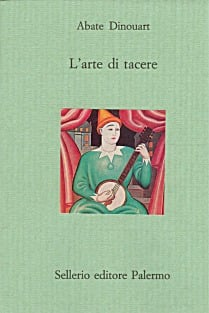
L’arte di tacere (L’art de se taire, principalement en matière de religion)
Note sul riferimento
Copertina dell’edizione indicata: Sellerio, Il divano 1, 1989, traduzione di Chiara Bietoletti, ISBN 9788838905698
Autore, titolo ed editore Sellerio espliciti; il partecipante legge un passo sulla competenza negli affari di Stato e ne propone una critica. Sellerio data l’originale Parigi 1771 e l’edizione italiana 1989: XVIII secolo, non XIX. Copertina ufficiale della stessa edizione italiana, nessuna tiratura certificata come quella mostrata.
Abate Dinouart, L’arte di tacere e Sellerio espliciti; un partecipante legge e commenta il passo sui cittadini, eruditi e filosofi che propongono riforme. L’interpretazione come apologia dell’assolutismo è dei partecipanti.
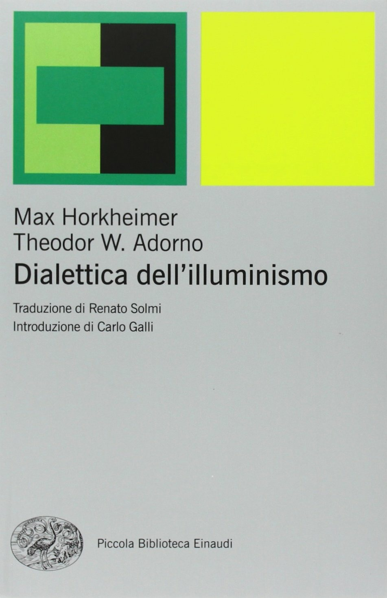
Dialettica dell’illuminismo
Note sul riferimento
Copertina: Einaudi, Piccola Biblioteca Einaudi, 2010
Edizione illustrativa dell'opera, con traduzione di Renato Solmi e introduzione di Carlo Galli; non identificata nel video.
Titolo Dialettica dell’illuminismo esplicito, nel ricordo di una seconda copia acquistata per la prefazione; nessuna edizione specifica certificata nel video.
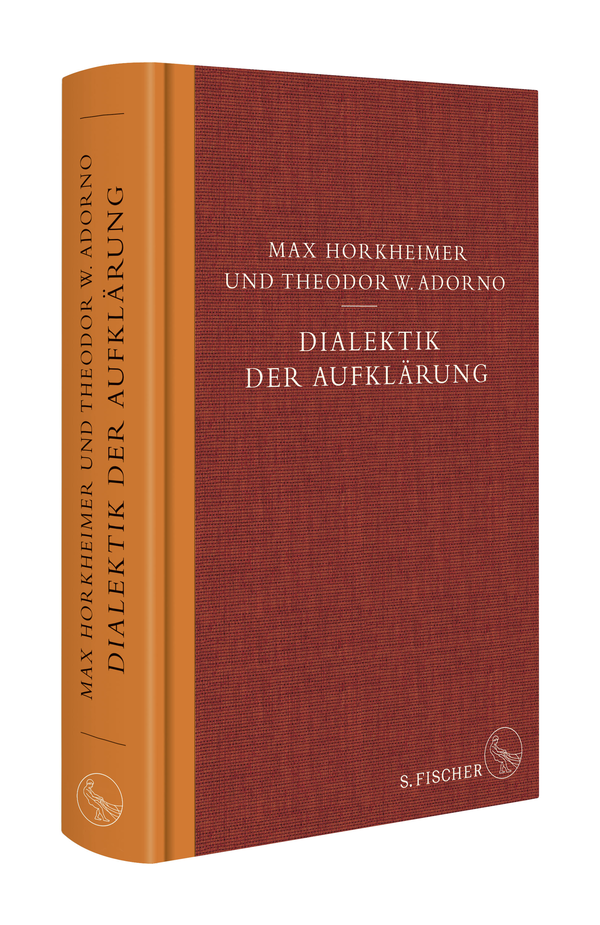
Prefazione all’edizione del 75ºanniversario di Dialektik der Aufklärung
Identificazione probabile
Note sul riferimento
Volume contenente la prefazione di Eva von Redecker: S. Fischer · Jubiläumsausgabe ·2022 · volume contenente la prefazione
Immagine ufficiale dell’intero volume di Horkheimer e Adorno che contiene la prefazione di Eva von Redecker. Non è una copertina autonoma della prefazione. Edizione identificata dai dati editoriali discussi, senza confronto del fotogramma.
Prefazione recente di un’accademica tedesca a Dialettica dell’illuminismo: possibile stessa prefazione di Eva von Redecker già catalogata. L’anno 2001 nella trascrizione automatica non prova una diversa edizione; attribuzione mantenuta probabile senza autore pronunciato.
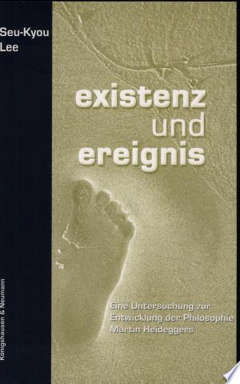
Existenz und Ereignis. Eine Untersuchung zur Entwicklung der Philosophie Heideggers
Identificazione probabile
Note sul riferimento
Copertina dell’edizione indicata: Königshausen & Neumann, Epistemata 278, 2001, ISBN 9783826018176
Titolo reso in italiano Esistenza ed evento, autore deformato nella trascrizione automatica: identificazione sostenuta dalla combinazione titolo, tesi Würzburg 1999 e libro 2001. Catalogo istituzionale LEO-BW/SWB e frontcover Google Books concordano. Copertina autentica tedesca con Seu-Kyou Lee e sottotitolo leggibili, non frontespizio ricostruito. Le diagnosi sociali citate sono interpretazioni filosofiche, non diagnosi cliniche.
Autore coreano Lee, tesi Würzburg 1999, titolo Esistenza ed evento e libro 2001: identificazione bibliografica probabile a Seu-Kyou Lee, non dalla sola somiglianza del cognome.
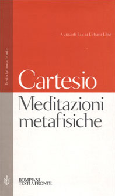
Meditazioni metafisiche (Meditationes de prima philosophia)
Note sul riferimento
Copertina dell’edizione indicata: Bompiani, luglio 2001, ISBN 9788845291142 · a cura di Lucia Urbani Ulivi
La seconda meditazione è nominata esplicitamente nel confronto fra esistenza individuale e modernità. Una sola voce per l’opera complessiva e le sue meditazioni, non una monografia diversa per ogni capitolo. Copertina ufficiale Bompiani con testo latino a fronte e traduzione francese in appendice, edizione non certificata nel filmato.
La seconda meditazione di Descartes è esplicitamente nominata nel confronto con la tesi sulla scomparsa dell’individuo. Riferimento a una parte dell’opera complessiva, non titolo separato.
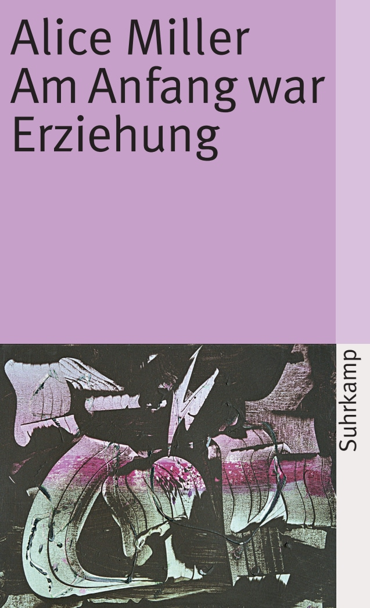
Am Anfang war Erziehung (La persecuzione del bambino. Le radici della violenza)
Note sul riferimento
Copertina dell’edizione indicata: Suhrkamp taschenbuch 951, ISBN 9783518374511 · copertina tedesca attuale
Titolo tedesco tradotto liberamente nel dialogo come All’inizio era l’istruzione/educazione. Non titolo italiano letterale distinto: l’edizione italiana è nota come La persecuzione del bambino. Copertina ufficiale tedesca, non prima tiratura 1980 o traduzione italiana; il sito data questa edizione tascabile 1983 e l’attuale ristampa 2026. Le tesi storico-psicologiche dell’autrice non fondano diagnosi di singole persone o collettività attuali.
Alice Miller e titolo tradotto All’inizio era l’istruzione/educazione, riconoscibile come Am Anfang war Erziehung. Non una nuova opera italiana omonima. Le tesi dell’autrice non consentono di diagnosticare a distanza singoli individui o popoli.

La fiducia tradita. Violenze e ipocrisie dell’educazione
Note sul riferimento
Copertina: Garzanti · Saggi blu ·1991
Fotografia autentica dell’edizione Garzanti 1991, nella risoluzione originale 128 × 195. Non ingrandita artificialmente; edizione non attribuita al video.
La fiducia tradita è esplicita nel gruppo di libri di Alice Miller. È distinta dal titolo incerto sulla menzogna pronunciato subito prima.
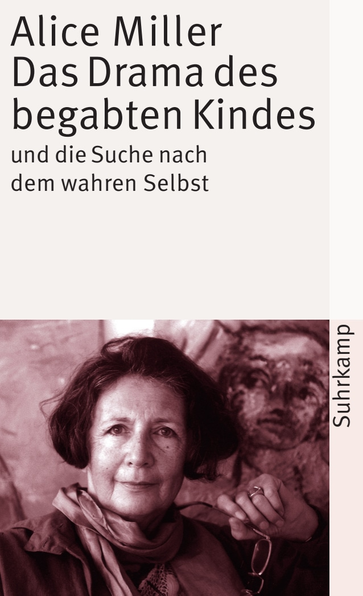
Il dramma del bambino dotato e la ricerca del vero Sé (Das Drama des begabten Kindes und die Suche nach dem wahren Selbst)
Note sul riferimento
Copertina dell’edizione indicata: Suhrkamp taschenbuch 950, ISBN 9783518374504 · copertina tedesca attuale
Titolo italiano esplicito. Il volume tedesco riunisce tre studi; non va confuso con libri successivi di Miller o con il libro del figlio Martin. Copertina ufficiale tedesca dell’edizione tascabile, con ristampa attuale 2026, non copertina italiana né prima edizione 1979. Nessuna tiratura del filmato identificata.
Il dramma del bambino dotato di Alice Miller è esplicitamente nominato fra le letture consigliate; non si assume l’elenco come programma terapeutico.

Filosofia della civiltà (The Philosophy of Civilization / Kulturphilosophie)
Identificazione probabile
Note sul riferimento
Copertina della raccolta completa The Philosophy of Civilization: Prometheus · The Philosophy of Civilization · 1987 · ISBN 9780879754037
La copertina rappresenta l’intera raccolta Prometheus, che comprende i due saggi. Non è la copertina della sola parte; non è la copertina Fazi e non identifica la specifica copia italiana citata. La raccolta è un contenitore editoriale, non una terza opera autonoma di Schweitzer distinta dai due testi.
Un partecipante nomina Filosofia della civiltà di Schweitzer e Fazi nel racconto di una richiesta di ristampa. La trascrizione automatica rende il nome Schwarz: titolo ed editore sostengono l’identificazione probabile; nessun dolo editoriale accertato.

La società del contrario
Note sul riferimento
Copertina: Zambon · 2005
Copertina autentica dell’edizione di riferimento, controllata visivamente. Non identifica l’esemplare letto o citato nel video.
La società del contrario e anno 2005 espliciti nel ricordo del relatore di un confronto alla fiera del libro; la scena e i giudizi su un editore non sono verificati indipendentemente.
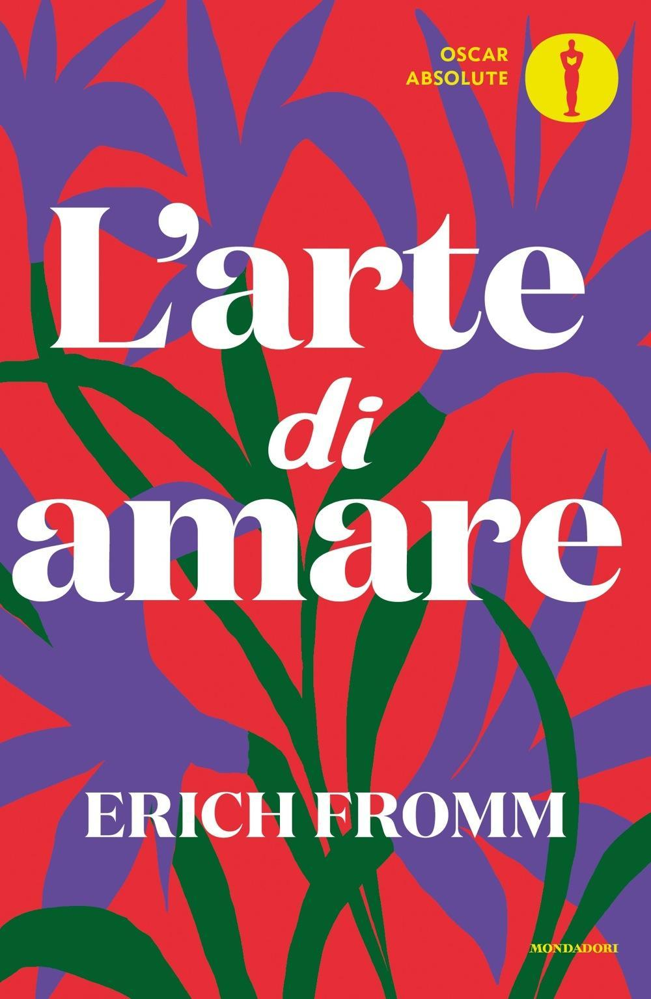
L’arte di amare
Note sul riferimento
Copertina: Mondadori · Oscar Absolute · 2016 · traduzione di Marilena Damiani
Copertina autentica di riferimento, controllata visivamente. L’edizione non è identificata come quella usata nel video.
L’arte di amare di Erich Fromm esplicita: un partecipante richiama l’uomo organizzato fra lavoro e intrattenimento, nel tema della perdita dell’impegno civico.

Eclisse della ragione. Critica della ragione strumentale
Identificazione probabile
Note sul riferimento
Copertina: Einaudi, Biblioteca Einaudi, 2000, traduzione di Elena Vaccari Spagnol, ISBN 9788806154370. Il titolo è anche catalogato con la variante Eclissi; la copertina acquisita reca Eclisse. Originale inglese Eclipse of Reason, 1947.
Copertina autentica Einaudi bianca con fascia blu, autore, titolo e sottotitolo leggibili. Non è la copertina del diverso Crepuscolo. Il collegamento all’editore Bloomsbury verifica l’opera originale, mentre la copertina italiana proviene da IBS.
Horkheimer e il libro sulla razionalità che apre con una domanda all’uomo comune: corrispondenza specifica probabile all’inizio di Eclisse della ragione; titolo non pronunciato.

Pirqè Avòt (Massime dei Padri)
Identificazione probabile
Note sul riferimento
Copertina: Copertina Massime dei padri. Pirké Avòt. Con traduzione a fronte, commenti, schede tematiche e racconti, Giuntina, Fuori collana, 2021, illustrazioni di Boris Shapiro, introduzione di Shalom Hazan, prefazione di Riccardo Di Segni, ISBN 9788880579014.
Copertina autentica illustrata con albero, figure di maestri e grande titolo ebraico Pirqè Avòt; immagine intera della scheda ISBN. Il titolo italiano non è sovrapposto artificialmente alla grafica. Hillel è autore della massima citata, non dell’intero trattato; Shapiro è illustratore, non autore antico. L’edizione moderna non viene attribuita al contributo.
Massima di Hillel su chi sia per me se non lo sono io, identificazione testuale probabile a Pirqè Avòt 1:14. La lettura egoistica raccontata è un’interpretazione contestata dal relatore, non attribuita al testo intero.